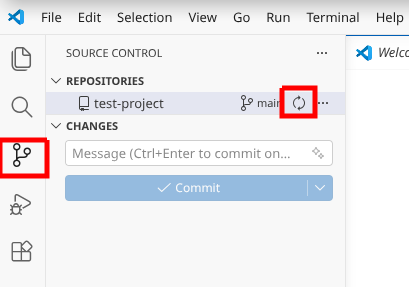
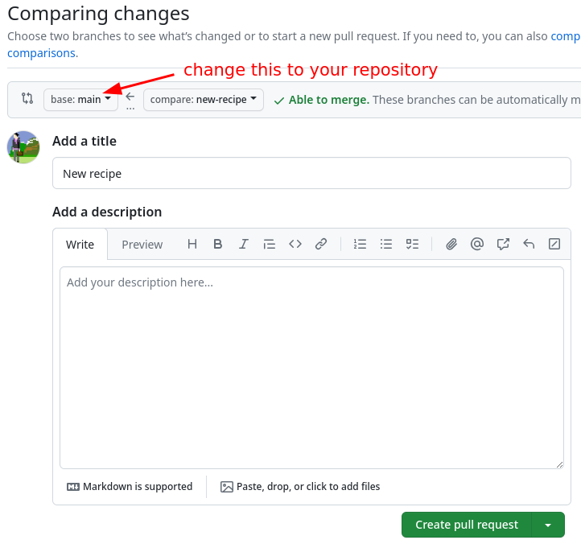

Merging changes and contributing to the project
Git allows us to have different development lines where we can try things out. It also allows different people to work on the same project at the same. This means that we have to somehow combine the changes later. In this part we will practice this: merging.
Objectives
Understand the concept of merging branches.
Understand how the same concept applies to a pull request, which you can think of as a change proposal.
Understand that for change proposals a local merge is not always necessary.
Instructor note
10 min introduction and setup
25 min exercise
15 min discussion
Background
In the last episode, we added a new recipe on a branch. This allows us to test it before it becomes “live”.
Now, we want to bring that change into the “main” branch.
We will find it’s not that hard! But you do have to keep track of the steps and make sure that you are careful about where a change is added.
Exercise
In this exercise, we will show how we can merge changes within our own repository. We will then propose changes of the recipe to the upstream recipe book - which shows the true purpose of this.

Illustration of what we want to achieve in this exercise.
For the first part we offer two different paths of how to do this exercise. These cover merging branches in your local repository. The second part will only cover GitHub, since it is mandatory for proposing changes to someone elses repository.
Exercise
Switch to the
mainbranch that you want to merge the other branch (new-recipe) into.Merge
new-recipebranch intomain(which is then your current branch).Find out which branches are merged and thus safe to delete. Then remove them and verify that the commits are still there, only the branch labels are gone. (Hint: you can delete branches that have been merged into
main).Synchronize local changes to your repository on GitHub
The solution below goes over most of the answers, and you are encouraged to use it when the hints aren’t enough - this is by design.
Solution and walk-through
Local Merging
(2) Merge the other branch
Now, we do the actual merging. We see some effects now.
Just like with the command line, when we merge we modify our current branch. Verify you are on the main branch.
Verify current branch at the bottom.
From the version control sidebar → Three dots → Branch → Merge
In the selector that comes up, choose the branch you want to merge from. The commits on that branch will be added to the current branch.

On the command line, when we merge, we always modify our current branch.
If you are not sure anymore what your current branch is, type:
$ git branch
… or equally useful to see where we are right now:
$ git status
In this case we merge the new-recipe branch into our current branch:
$ git merge new-recipe
(3) Delete merged branches
Before deleting branches, first check whether they are merged.
If you delete an un-merged branch, it will be difficult to find the commits that were on that branch. If you delete a merged branch, the commits are now also part of the branch where we have merged to.
From the Source Control sidebar → the three dots (as before) → Branch → Delete Branch. Select the branch name to delete.
Verify which branches are merged to the current branch:
$ git branch --merged
* main
new-recipe
This means that it is safe to delete the new-recipe branch:
$ git branch -d new-recipe
Verify then that the branch is gone but that the commits are still there:
$ git branch
$ git log --oneline
(4) Synchronize local change to GitHub
In order to prepare your work for contribution, you need to somehow get your latest version to GitHub.
We can synchronize our changes back to GitHub by pushing them.
{kind=link}

We can synchronize our changes back to GitHub by pushing them.
$ git push
Remote merging (“pull request”)
Now that our changes are available on GitHub, we can consider to contribute our changes. In order to contribute to the upstream, we make something called a pull request. This will also allow review and commenting before the actual merge.
Exercise: Merging branches with pull requests (10 min)
We assume that in the previous exercise you have created a new branch
with a recipe. In our previous example, it is called new-recipe.
If not, create the branch first and add a recipe to your new branch, see
Committing (“recording”) changes.
We provide basic hints. You should refer to the solution as needed.
Begin the pull request process (hint: There is a “Contribute” button in the branch view).
Add or modify the pull request title and description, and verify the other data. In the pull request verify the target repository and the target branch. Make sure that you are merging your main branch from your repository to the main branch from the upstream repository.
Create the pull request by clicking “Create pull request”. Browse the network view to see if anything has changed yet.
(5) Begin the pull request process

(6) Fill out and verify the pull request
Check that the pull request is directed to the right repository and branch and that it contains the changes that you meant to merge.
Things to check:
Base: this should be main branch of
ipatix/recipe-bookCompare: this should be your branch (e.g. main branch) from
USER/recipe-bookTitle: make it descriptive
Description: make it informative
Scroll down to see commits: are these the ones you want to merge?
Scroll down to see the changes: are these the ones you want to merge?

This screenshot only shows the top part. If you scroll down, you can see the commits and the changes. We recommend to do this before clicking on “Create pull request”.
{kind=link}
(7) Create the pull request
We actually create the pull request. Note that the changes proposed in the pull request are not yet merged.
Click on the green button “Create pull request”.
If you click on the little arrow next to “Create pull request”, you can also see the option to “Create draft pull request”. This will be interesting later when collaborating with others. It allows you to open a pull request that is not ready to be merged yet, but you want to show it to others and get feedback.
Resolving a conflict (demonstration)
A conflict is when Git asks humans to decide during a merge which of two changes to keep if the same portion of a file has been changed in two different ways on two different branches.
Here we will only demonstrate how to create a conflict and how to resolve it. While we demonstrate the resolution on GitHub, this workflow is not recommended in practice, since you cannot always verify that your merged changes are correct (e.g. software runs correctly). Once we understand how this works, we will be more confident to resolve conflicts also in the command line.
How to create a conflict (please try this in your own time and just watch now):
Create a new branch from
mainand on it make a change to a file.On
main, make a different change to the same part of the same file.Now try to merge the new branch to
main. You will get a conflict.
How to resolve conflicts:
On GitHub, you can resolve conflicts by clicking on the “Resolve conflicts” button. This will open a text editor where you can choose which changes to keep. Make sure to remove the conflict markers. After resolving the conflict, you can commit the changes and merge the pull request.
Sometimes a conflict is between your change and somebody else’s change. In that case, you might have to discuss with the other person which changes to keep.
Summary
We learned how to merge two branches together.
When is this useful? This is not only useful to combine development lines in your own work. Being able to merge branches also forms a basis for collaboration.
Branches which are merged to other branches are safe to delete, since we only delete the “sticky note” next to a commit, not the commits themselves.